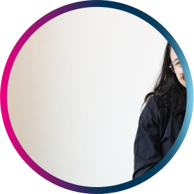
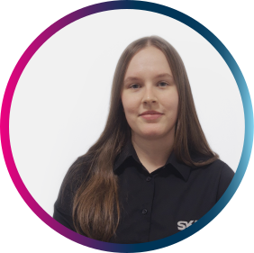

Inscrições até 10 de agosto de 2025
Conheça as mentoras

AMANDA
Tem 19 anos e cursa Bacharelado em Ciência da Computação na Unisinos. Trabalha à 3 anos SKA, onde iniciou como estagiária de qualidade e foi efetivada como Desenvolvedora Full Stack, consolidando sua carreira na área de tecnologia com foco em desenvolvimento de software.

ANDRESSA
Estudante de Ciência da Computação na Unisinos, atua há 3 anos na SKA. Durante sua trajetória na empresa, iniciou como Analista de Qualidade (QA) e atualmente trabalha como Desenvolvedora Full Stack, contribuindo em projetos com foco em inovação e performance.
 CAMILA
CAMILA
É graduada em Design Gráfico, especializada em Design de Serviço e Interação. Já atuou como designer gráfico em times de marketing e também como criadora de conteúdo em equipes de comunicação e endomarketing. Hoje como UX/UI Designer na SKA, une criatividade e foco total na experiência do usuário.
MALU
Tem 19 anos e cursa Sistemas de Informação na Unisinos. Atuou como estagiária de QA, sendo posteriormente efetivada na mesma área. Acumula 3 anos de experiência como QA e atualmente trabalha como Coordenadora de Projetos, unindo experiência técnica e habilidades de liderança na área de tecnologia.